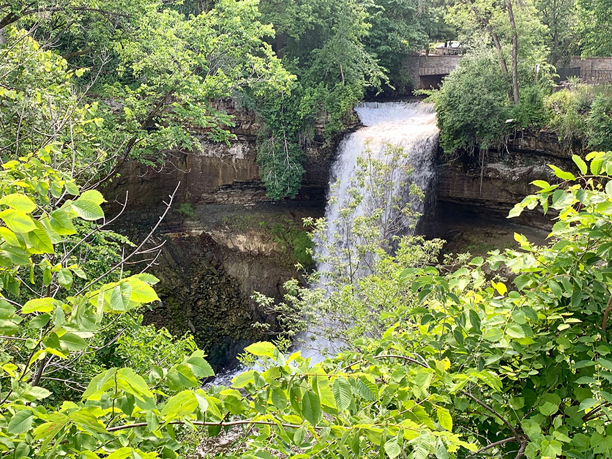
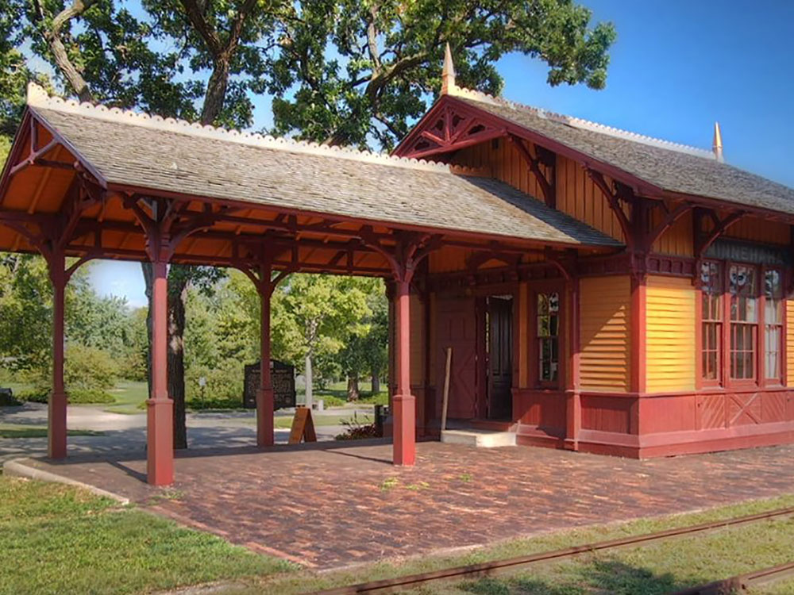
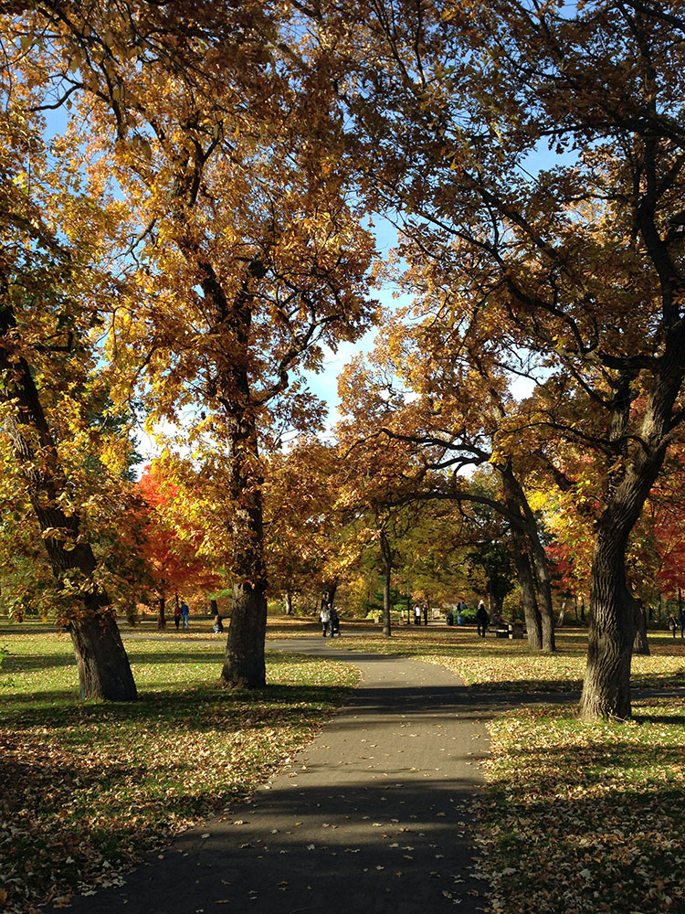

City park and home to Minnehaha Falls and the lower reaches of Minnehaha Creek
General Information
Undeveloped areas: 6am to 10pm
Parking fees may apply in designated lots and metered areas
Spring through fall offers the best waterfall views, hiking, biking, and outdoor dining.
Winter provides dramatic frozen waterfall scenery and snowy trails.
How to Get There
From Minneapolis (0 mi): Take Hiawatha Avenue south to Minnehaha Park Drive and follow signs to Minnehaha Regional Park at 4801 S Minnehaha Drive, home to the famous Minnehaha Falls and extensive trails along Minnehaha Creek and the Mississippi River.
Overview
Minnehaha Park is a city park in Minneapolis and home to Minnehaha Falls and the lower reaches of Minnehaha Creek. Officially named Minnehaha Regional Park, it is part of the Minneapolis Park and Recreation Board system and lies within the Mississippi National River and Recreation Area, a unit of the National Park Service. The park was designed by landscape architect Horace W.S. Cleveland in 1883 as part of the Grand Rounds Scenic Byway system, and was part of the popular steamboat Upper Mississippi River "Fashionable Tour" in the 1800s.
The park preserves historic sites that illustrate transportation, pioneering, and architectural themes. Preserved structures include the Minnehaha Princess Station, a Victorian train depot built in the 1870s; the John H. Stevens House, built in 1849 and moved to the park from its original location in 1896, utilizing horses and 10,000 school children; and the Longfellow House, a house built to resemble the Henry Wadsworth Longfellow's house in Cambridge, Massachusetts. The park was listed on the National Register of Historic Places in 1969 as the Minnehaha Historic District in recognition of its state-level significance in architecture, commerce, conservation, literature, transportation, and urban planning.
The central feature of the park, Minnehaha Falls, was a favorite subject of pioneer photographers, beginning with Alexander Hesler's daguerreotype in 1852. Although he never visited the park, Henry Wadsworth Longfellow helped to spread the waterfall's fame when he wrote his celebrated poem, The Song of Hiawatha. The falls are located on Minnehaha Creek near the creek's confluence with the Mississippi River, near Fort Snelling. The main Minnesota Veterans Home is located on a bluff where the Mississippi and Minnehaha Creek converge. More than 850,000 people visit Minnehaha Falls each year, and it continues to be the most photographed site in Minnesota.
Minnehaha Park is situated on the banks of the Mississippi River within the Minnehaha Historic District. Located between Hiawatha Avenue and the Minnehaha Parkway, the park includes Minnehaha Creek with its falls and glen. The 167-acre park is divided into two main portions: an upper section above the falls, with grassy open areas like many other city parks, and the lower 54-acre section which is for the most part allowed to maintain its natural state. The creek runs through the upper section and after it drops at the falls, it flows through the lower glen for another three-fourths of a mile.
Gardens in the upper park area include Longfellow Gardens, Minnehaha Falls Pergola Garden, and the Song of Hiawatha Garden. The lower glen area offers examples of a surprisingly large number of trees that are native to Minnesota including basswood, black ash, maples, oaks, willows, and cottonwoods. Unusual plants include the first spring-blooming plant, skunk cabbage, often blooming so early that temperatures are still freezing and snow may still be on the ground. Other wild flowers include wild ginger, trout lilies, anemones, marsh marigold and various ferns and sedges.
Statues in the park include a bronze sculpture of Hiawatha and Minnehaha, by Jacob Fjelde depicting Hiawatha carrying Minnehaha. It was originally created in plaster for the Columbian Exposition in 1893, and cast in bronze and erected at the park in 1912. Other statues commemorate several notable figures including John H. Stevens, the first authorized resident on the west bank of the Mississippi River in what would become Minneapolis. A statue of Swedish musician and poet Gunnar Wennerberg was placed in the park in 1915. A mask of Dakota leader Taoyateduta (Little Crow) was placed overlooking the falls in 1992.
Minnehaha Creek extends from Lake Minnetonka in the west and flows east for 22 miles (35 km) through several suburbs west of Minneapolis, and continuing through south Minneapolis. The watershed for the creek covers 181 square miles (470 km2). Along the creek is a 53-foot (16-meter) waterfall, Minnehaha Falls, which is situated 3/4 of a mile from where the stream empties into the Mississippi River.
Minnehaha Falls is geologically linked to Saint Anthony Falls, which is the only waterfall on the Mississippi River. Roughly 10,000 years ago St. Anthony Falls was located several miles downstream on the Mississippi River at the confluence of the glacial River Warren (at present-day Ft. Snelling). Geologically, the area has a sandstone layer beneath a layer of limestone. Over the centuries, water in the river beds broke through the limestone layer, and the churning at the bottom of the falls ate away at the soft underlying sandstone. Eventually, the hard limestone cap was unsupported and broke off. Thus St. Anthony Falls receded, moving upstream at a rate of about 4 feet (1.2 m) per year. As St. Anthony Falls on the Mississippi River moved past Minnehaha Creek, a second falls was created, Minnehaha Falls, which also continued to move upstream to its present site in the park.
A small train station officially named Minnehaha Depot but also known as "the Princess Depot" was built around 1875; it was a stop on the Milwaukee Road railroad and provided easy access to the park from Fort Snelling and Minneapolis. The depot handled as many as 39 round trips per day. The interior is complete and well-preserved, containing an iron heating stove, waiting room benches and a ticket window. In 1964, the title was transferred to the Minnesota Historical Society. The Minnesota Transportation Museum assisted in the restoration of the building, and today provides historic interpretation.
Despite its name, the Longfellow House was never home to the American poet Henry Wadsworth Longfellow; it was instead the home of Robert F. Jones, a Minneapolis philanthropist and entrepreneur. Built in 1907, the house's facade was designed to resemble Longfellow's home in Cambridge, Massachusetts. Originally the home was part of Jones' private 4.6-acre botanical garden and zoological park near Minnehaha Falls. After Jones died, the home fell into disrepair. His will gave the property to the city which used the house as part of the Minneapolis public library from 1936 to 1967. The house was moved in 1994 and renovated. It opened as an information center in 2001. Today the home serves as the home of a botanical art school and provides offices for the Minneapolis Parks Foundation.
The John Harrington Stevens House, built in 1849 or 1850 near St. Anthony Falls (on the site where the Minneapolis Post Office now sits), was moved to Minnehaha Park in 1896. According to the Minneapolis Park and Recreation Board, the home has the distinction of being the first wood-frame dwelling built west of the Mississippi. John H. Stevens was granted permission to build his house on land controlled by Fort Snelling in exchange for providing ferry service across the Mississippi River.
This article uses material from the Wikipedia article "Minnehaha Park (Minneapolis)", which is released under the Creative Commons Attribution-Share-Alike License 3.0




